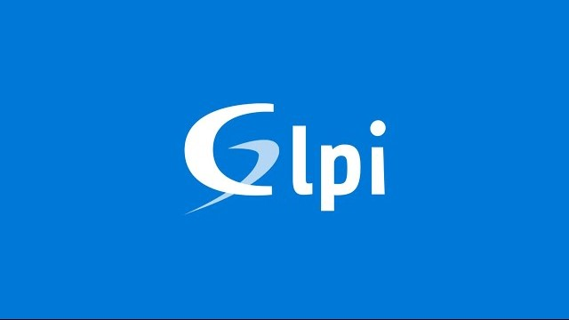
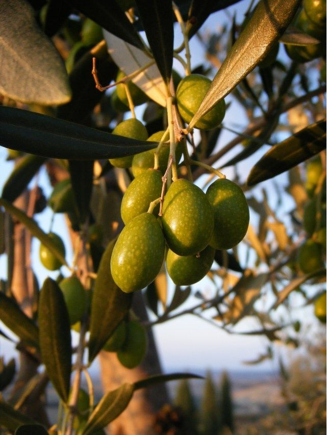
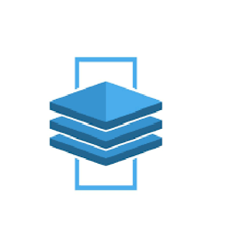
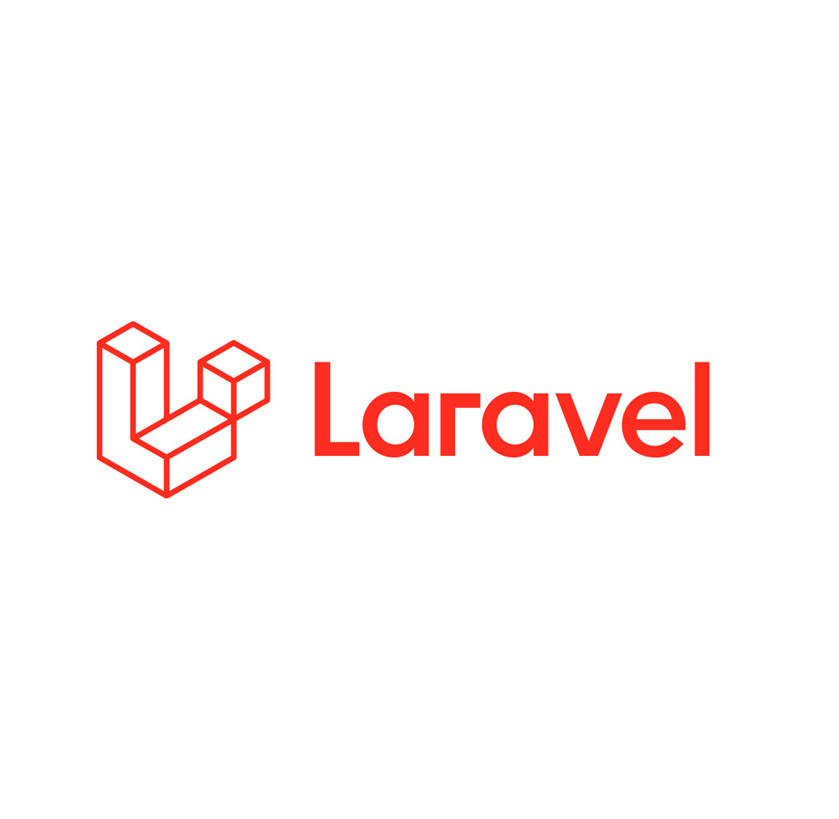
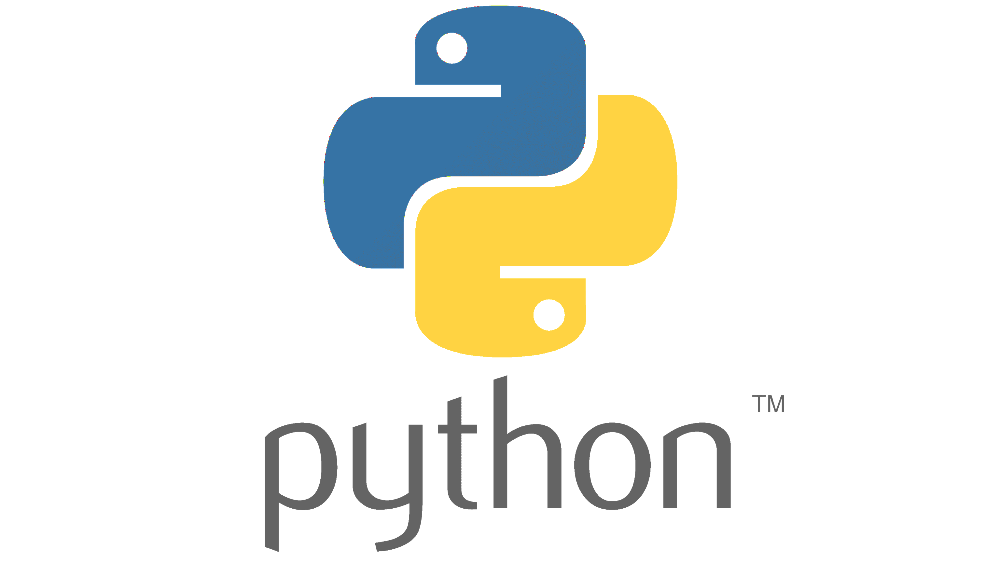
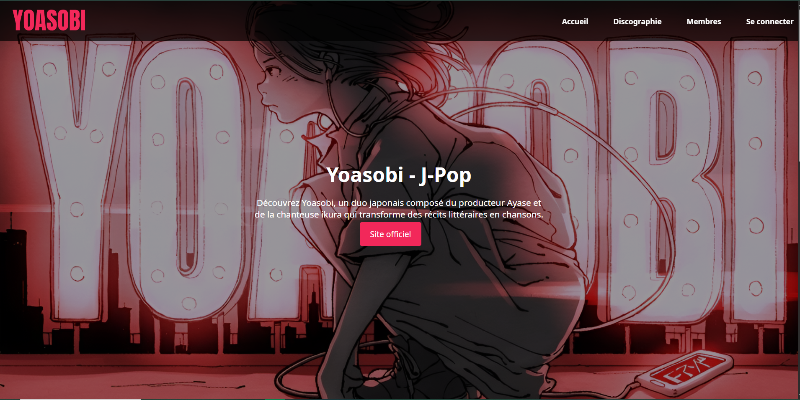
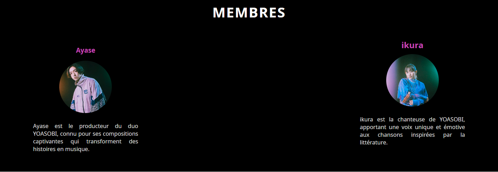
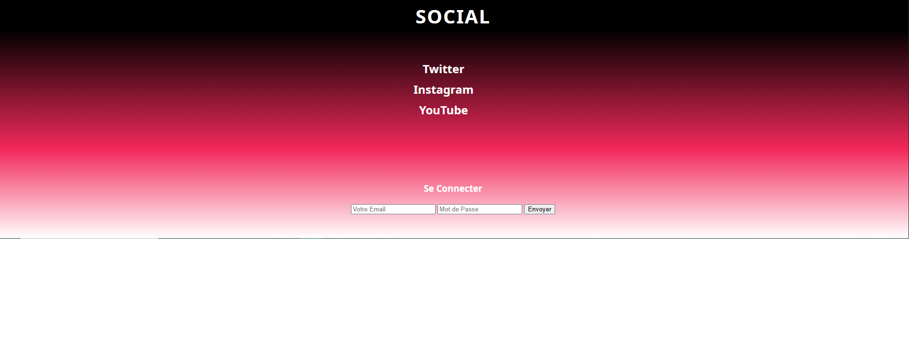

01
Site J-Pop — YOASOBI
Site vitrine dédié au groupe de J-Pop YOASOBI, avec présentation des membres et de la discographie.
BTS SIO 2 SLAM - Candidature pour License
BTS SIO · Développeur Web
Étudiant passionné par le développement web, je maîtrise HTML, CSS, JavaScript et PHP. À la recherche d'une opportunité pour mettre mes compétences en pratique.
Actuellement en BTS SIO, je me spécialise dans le développement web avec une vraie passion pour créer des expériences digitales élégantes et fonctionnelles.
Au fil de ma formation, j'ai acquis les bases solides de plusieurs langages et technologies web, et je continue à apprendre chaque jour.
Résilience face aux défis techniques
Capacité à m'intégrer dans tout environnement
Proactif et orienté résultats
Site vitrine dédié au groupe de J-Pop YOASOBI, avec présentation des membres et de la discographie.

Administration d'un parc informatique via GLPI : inventaire, tickets et suivi des équipements.

Plateforme de vente en ligne d'huiles de qualité avec catalogue complet, panier et système de paiement.

Outil interactif pour configurer des plaques de plexiglass en temps réel avec formes variables, dimensions, trous et découpes.

Application complète de gestion de bibliothèque en ligne avec système d'emprunts, réservations, et gamification.

Application de gestion commerciale complète pour PME e-commerce avec gestion clients, commandes, et programme de fidélité.
Lycée Simone Weil
Formation en Services Informatiques aux Organisations, spécialité Solutions Logicielles et Applications Métier. Apprentissage approfondi du développement web full-stack, base de données, et architectures logicielles.
Université Jean Monnet
Année préparatoire de musicologie permettant de découvrir les bases de l'histoire musicale, l'analyse musicale et la théorie. Formation enrichissante qui a élargi mes horizons culturels.
Lycée Jacob Holtzer
Baccalauréat Sciences et Technologies de l'Industrie et du Développement Durable. Formation générale solide avec spécialisation en innovation technologique et éco-conception .
CTRLZ SAS
Création d'un site configurateur interactif permettant aux utilisateurs de personnaliser et visualiser en temps réel des plaques de matériau. Projet complet impliquant du design UX/UI, du frontend moderne et de la gestion d'état complexe. Mise en place d'une interface professionnelle avec Vue.js et Web GL pour le rendu 3D.
CoinMobile
Stage complet couvrant l'ensemble du cycle de développement d'une application web. Missions variées allant de la gestion de données aux déploiements en production, avec utilisation d'outils professionnels modernes.
Maîtrise complète — Parlé, écrit et compris
Très bonne maîtrise — Capable de communiquer en contexte professionnel
Notions élémentaires — En progression
En cours d'apprentissage personnel — Hiragana, Katakana et premières notions
Téléchargez les documents officiels relatifs à l'épreuve E5 du BTS SIO
Vous avez un projet, une opportunité d'alternance ou simplement envie d'échanger ? Je suis disponible !
Email direct
aaron.zerrouk96@gmail.comCe projet avait pour objectif de créer un site vitrine dynamique et attrayant dédié au groupe musical japonais YOASOBI. Le site présente les membres du groupe, leur histoire, discographie et offre une expérience utilisateur immersive avec des animations et des interactions fluides.



